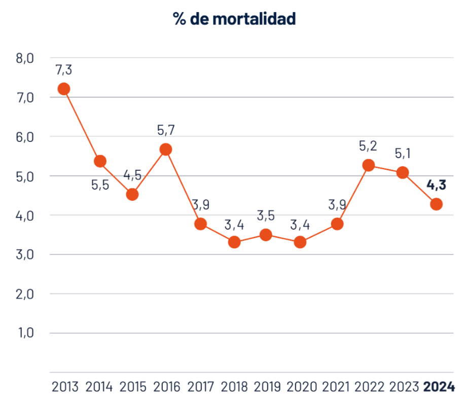
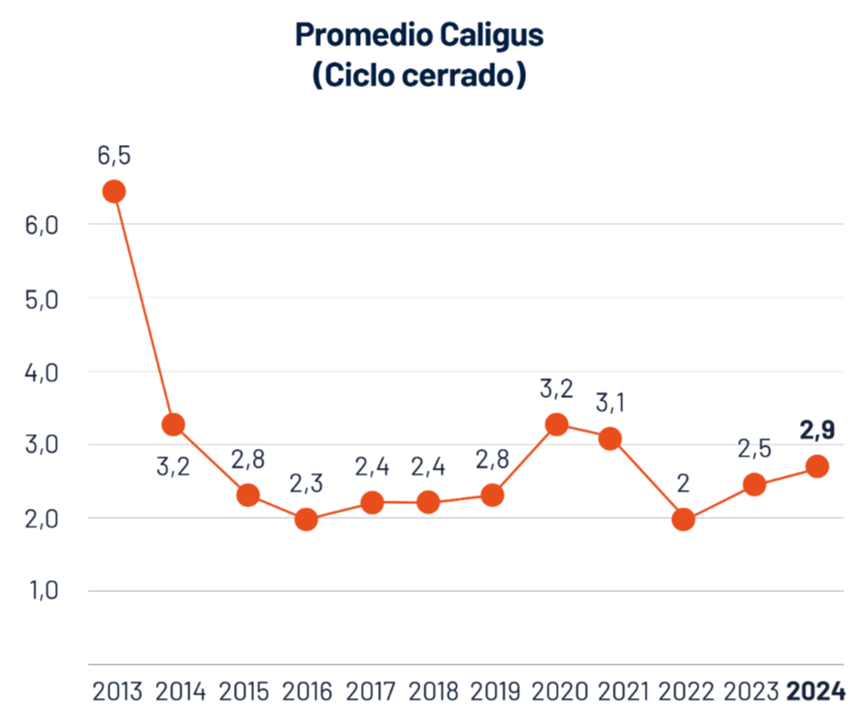

Análisis datos composicional (Aitchison) e inferencia de competencias
Pregunta
Para responder a esta pregunta se procede mediante análisis composicional (Aitchison), lectura estructural de agregación de valor, uso de indicadores sanitarios como variables de fricción, inferencia de competencias desde tensiones observadas. El estudio no reemplaza los marcos internacionales (EQF, marcos sectoriales, etc.), pero: explica por qué ciertas competencias de niveles altos (control, supervisión, integración, aprendizaje) son necesarias, aporta evidencia empírica de dónde y por qué esas competencias se activan.
La agregación es un contexto para la inferencia: por tanto no es ni puramente industrial ni puramente biológico. Es la interfaz donde: la lógica industrial intenta organizar, acelerar y capturar valor, y aquí los bioprocesos imponen límites, ritmos y umbrales biológicos. Cuando la agregación de valor está desbalanceada, la presión sobre los bioprocesos aumenta. El sistema exige que los procesos vivos se comporten como procesos industriales, lo que no es posible sin costos. Ahí aparece el tratamientos sanitario, la intervención extrema, la pérdida de biomasa, y la tensión regulatoria.Método
El estudio presupone la diferencia entre un proceso industrial y un bioproceso. Ambos se articulan dentro de una cadena de valor. El proceso industrial es estandarizable, opera bajo supuesto de control y repetibilidad, se organiza en torno al flujo, eficiencia, costo y cumplimiento normativo. En la salmonicultura, corresponde principalmente: a) planeación productiva, b) logística, c) procesamiento, d) gestión operativa, y d) sistemas de soporte y control. Aquí se captura y consolida el valor económico. El bioproceso opera sobre un sistema vivo, es intrínsecamente variable y sensible al contexto, no responde completamente a una lógica de control industrial. Incluye: desarrollo biológico en agua dulce, crecimiento y salud en engorda marina, interacción con el ambiente, respuesta fisiológica al manejo e intervención. Aquí el valor no se controla, se condiciona.
La composición del valor sectorial requiere de los siguientes pasos:
- Recolectar y depurar la evidencia base por titular. Construye una tabla maestra con columnas mínimas: WEB, TITULAR, PAIS, LATITUD, LONGITUD, AGREGACION DE VALOR (texto corregido y verificable). Normaliza nombres (mayúsculas, sin tildes), elimina duplicados y deja una fila por unidad de análisis (empresa o holding).
- Definir el modelo de agregación de valor como composición cerrada. Establece las partes AD, MAR, PROC, ID, SOP como dimensiones del proceso de agregación de valor (no bioprocesos), y crea un léxico de keywords por cada parte para contar evidencia en el texto. Ejecuta el conteo por fila y convierte esos conteos a proporciones (cierre): cada empresa queda como un vector positivo que suma 1.
- Controlar de calidad composicional. Verifica que no existan ceros (aplica pseudoconteo EPS), que todas las filas sumen 1, y que los rangos sean plausibles. Genera la tabla de proporciones (“firmas”) y expórtala a HTML para auditoría (scroll único, columna empresa ancha, numéricas iguales).
- Analizar CoDA en el simplex (Aitchison). Aplica transformaciones log-ratio: clr para inspección y distancias, y ilr para balances interpretables (por ex: Producción = {AD,MAR,PROC} versus Adaptación/Soporte = {ID,SOP}). Calcula métricas globales (centroides, dispersión) y métricas por empresa (balances). Exporta tablas clr e ilr a HTML.
- Crear subcomposiciones y triángulos (lectura estructural). Seleccionar 6 triángulos simétricos relevantes (v.gr: AD–MAR–PROC, AD–MAR–ID, AD–MAR–SOP, MAR–PROC–ID, MAR–PROC–SOP, PROC–ID–SOP). Para cada triángulo construye subcomposición cerrada y grafica con Plotly ternario, enriqueciendo hover con perfil dominante, zona (dominante vs segunda) y una conclusión corta. Exporta cada gráfico a HTML y es puesto aquí como iframe.
- Establecer la fragilidad subcomposicional y riesgo operativo. Define y calcula FRAGILIDAD_SUBCOMP como sensibilidad estructural (cambios de lectura al remover una parte o como concentración/monodominancia en subcomposiciones). Cruza fragilidad con el balance ilr (producción↔adaptación) en un scatter interactivo y usa umbrales para clasificar riesgo (bajo/medio/alto). Exporta el plot y una tabla resumen a HTML.
- Inferir competencias por zona + riesgo (motor liviano). Define reglas de asignación: ZONA = dominante_vs_segunda en cada triángulo y RIESGO desde fragilidad. Crea un diccionario pequeño de competencias (3 por zona) y ajusta el lenguaje según riesgo (prevención/control cuando es alto). Genera tablas por empresa con competencias recomendadas y dashboards donde el hover entregue “qué significa su posición” y “qué capacidades faltan”.
Paso 1: Inferencia de la agregación de valor
Se realiza una inferencia semántica sobre los sitios web de todas las empresas salmoneras: descarga el contenido, extrae el texto realmente visible, lo normaliza y lo convierte en una evidencia verificable de cómo cada empresa describe su agregación de valor. Luego, esa evidencia se clasifica automáticamente usando un léxico ancla que detecta señales lingüísticas asociadas a cinco dimensiones del proceso: AD (Adaptación), cuando el texto enfatiza personalización, ajuste a requerimientos o flexibilidad; MAR (alimentación-engorda), cuando se destaca posicionamiento, clientes, propuesta comercial o diferenciación; PROC (Procesos/producción), cuando la narrativa se centra en operación, manufactura, logística, eficiencia o control de procesos; ID (Innovación y desarrollo), cuando aparecen I+D, tecnología, mejora continua o diseño de soluciones; y SOP (Soporte/servicios habilitantes), cuando predominan soporte técnico, postventa, certificaciones, compliance o infraestructura de servicio. Con esos indicadores, el sistema genera como salida una tabla por empresa donde la columna “Agregación de valor” queda como un texto corregido y trazable a su fuente, junto con los conteos y proporciones AD–MAR–PROC–ID–SOP que resumen su “firma” de valor. El algoritmo es conceptual para su implementación en python:
1for each url ∈ URLs do 2html ← Download(url); SaveRaw(html, url, timestamp) 3text ← VisibleText(html) 4text ← Normalize(text) // mayúsculas, espacios, artefactos, nombres 5firm ← ResolveEntity(text, url) // empresa/holding; deduplicación 6evidence ← ExtractValueAdded(text) // fragmentos verificables + referencia 7counts[AD,MAR,PROC,ID,SOP] ← CountAnchors(evidence, Lexicon) 8if AnyZero(counts) then counts ← counts + EPS 9signature ← Closure(counts) // signature_i = counts_i / Σcounts 10AppendRow(MasterTable, firm, url, evidence, signature) 11end 12ExportHTML(MasterTable); ExportHTML(Signatures)
Se obtiene la siguiente tabla:
Paso 2: Transformar agregación de valor en proporciones
Este algoritmo introduce la lógica que convierte texto web “desordenado” en una tabla numérica comparable entre empresas. Primero, cada empresa se representa como una composición AD–MAR–PROC–ID–SOP (proporciones que suman 1) inferida desde su evidencia de agregación de valor; luego esa composición se transforma con CLR (centered log-ratio) para poder analizarla en un espacio euclídeo sin caer en comparaciones engañosas típicas de datos porcentuales. Cada fila corresponde a una empresa y sus columnas resumen su perfil composicional en coordenadas CLR: EMPRESA identifica la unidad de análisis; clr_AD es la intensidad relativa de Adaptación (personalización/flexibilidad); clr_MAR captura engorda(alimentación); clr_PROC refleja Procesos/producción (operación, eficiencia, control); clr_ID representa Innovación y desarrollo (I+D, tecnología, mejora); y clr_SOP corresponde a Soporte (postventa, certificaciones, cumplimiento). En esta codificación, valores CLR positivos indican énfasis por sobre el promedio geométrico de la firma de la empresa, y negativos indican menor peso relativo.
Estructura dimensiones de agregación de valor:
[
{
"dimension": "AD",
"nombre_dimension": "Biología temprana / Agua dulce",
"descripcion": "Configuración del potencial biológico inicial y condicionamiento del ciclo productivo",
"keywords_ancla": [
{"termino": "piscicultura", "peso": 1.0, "contexto": "infraestructura"},
{"termino": "agua dulce", "peso": 0.8, "contexto": "entorno"},
{"termino": "smoltificación", "peso": 1.0, "contexto": "bioproceso"},
{"termino": "alevinaje", "peso": 0.9, "contexto": "bioproceso"},
{"termino": "ovas", "peso": 0.7, "contexto": "biología"},
{"termino": "RAS", "peso": 0.9, "contexto": "infraestructura"},
{"termino": "fotoperíodo", "peso": 0.8, "contexto": "manejo biológico"},
{"termino": "genética", "peso": 0.6, "contexto": "biología"}
],
"exclusiones": ["acuario", "ornamental", "pesca recreativa"]
},
{
"dimension": "MAR",
"nombre_dimension": "Engorda marina / Producción biológica",
"descripcion": "Producción intensiva de biomasa en ambiente abierto bajo manejo industrial",
"keywords_ancla": [
{"termino": "centros de engorda", "peso": 1.0, "contexto": "infraestructura"},
{"termino": "jaulas", "peso": 0.9, "contexto": "infraestructura"},
{"termino": "engorda en mar", "peso": 1.0, "contexto": "bioproceso"},
{"termino": "alimentación", "peso": 0.8, "contexto": "nutrición"},
{"termino": "biomasa", "peso": 0.7, "contexto": "producción"},
{"termino": "densidad de cultivo", "peso": 0.9, "contexto": "manejo"},
{"termino": "sanidad", "peso": 0.8, "contexto": "bioproceso"},
{"termino": "caligus", "peso": 0.9, "contexto": "presión parasitaria"}
],
"exclusiones": ["pesca artesanal", "extractiva", "acuicultura de pequeña escala"]
},
{
"dimension": "PROC",
"nombre_dimension": "Proceso industrial / Captura de valor",
"descripcion": "Transformación industrial de biomasa en productos estandarizados",
"keywords_ancla": [
{"termino": "planta de proceso", "peso": 1.0, "contexto": "infraestructura"},
{"termino": "procesamiento", "peso": 0.9, "contexto": "industrial"},
{"termino": "fileteado", "peso": 0.8, "contexto": "industrial"},
{"termino": "congelado", "peso": 0.7, "contexto": "industrial"},
{"termino": "cosecha", "peso": 0.9, "contexto": "operación"},
{"termino": "exportación", "peso": 0.6, "contexto": "comercial"},
{"termino": "valor agregado", "peso": 0.8, "contexto": "económico"}
],
"exclusiones": ["restaurante", "venta minorista", "comercialización gastronómica"]
},
{
"dimension": "ID",
"nombre_dimension": "Exploración / Aprendizaje / Innovación",
"descripcion": "Capacidad de adaptación, experimentación y ajuste del sistema productivo",
"keywords_ancla": [
{"termino": "I+D", "peso": 1.0, "contexto": "innovación"},
{"termino": "investigación aplicada", "peso": 0.9, "contexto": "conocimiento"},
{"termino": "ensayos", "peso": 0.8, "contexto": "experimentación"},
{"termino": "mejora continua", "peso": 0.7, "contexto": "gestión"},
{"termino": "transferencia tecnológica", "peso": 0.9, "contexto": "aprendizaje"},
{"termino": "optimización de procesos", "peso": 0.6, "contexto": "gestión"},
{"termino": "datos productivos", "peso": 0.6, "contexto": "analítica"}
],
"exclusiones": ["marketing", "publicidad", "branding"]
},
{
"dimension": "SOP",
"nombre_dimension": "Soporte / Gobernanza / Control",
"descripcion": "Funciones organizacionales que permiten estabilidad, cumplimiento y control sistémico",
"keywords_ancla": [
{"termino": "cumplimiento normativo", "peso": 1.0, "contexto": "regulación"},
{"termino": "certificación", "peso": 0.9, "contexto": "control"},
{"termino": "SERNAPESCA", "peso": 0.8, "contexto": "regulación"},
{"termino": "bioseguridad", "peso": 0.9, "contexto": "control"},
{"termino": "monitoreo", "peso": 0.8, "contexto": "control"},
{"termino": "gestión sanitaria", "peso": 0.7, "contexto": "gobernanza"},
{"termino": "sostenibilidad", "peso": 0.6, "contexto": "marco institucional"}
],
"exclusiones": ["responsabilidad social genérica", "filantropía", "memoria corporativa"]
}
]
1for each empresa ∈ MasterTable do 2text ← empresa.AGREGACION_DE_VALOR 3counts[AD,MAR,PROC,ID,SOP] ← CountAnchors(text, Lexicon) 4if AnyZero(counts) then counts ← counts + EPS 5p ← Closure(counts) 6// p es composición: p_i > 0 y Σp_i = 1 7g ← GeometricMean(p) 8for each parte i ∈ {AD,MAR,PROC,ID,SOP} do 9clr_i ← ln(p_i / g) 10end 11AppendRow(CLR_Table, empresa, clr_AD, clr_MAR, clr_PROC, clr_ID, clr_SOP) 12end 13ExportHTML(CLR_Table)
Se obtiene la siguiente tabla:
Paso 3: Vista ternaria: subcomposición para análisis
Se construye una vista ternaria subcomposicional a partir de la firma composicional original de cada empresa. En vez de trabajar con las cinco dimensiones completas (AD, MAR, PROC, ID, SOP), selecciona solo el triángulo AD–MAR–PROC y aplica cierre subcomposicional: es decir, para cada empresa se recalcula AD, MAR y PROC como proporciones relativas entre ellas, dividiendo cada valor por la suma AD+MAR+PROC de su propia fila. El resultado es una tabla donde cada fila queda en el simplex ternario (AD+MAR+PROC = 1) y por lo tanto permite comparar empresas solo en ese subespacio, sin “contaminación” de ID y SOP. La tabla exportada contiene la columna EMPRESA (identificador) y las tres columnas numéricas AD, MAR y PROC, que representan el peso relativo de Adaptación (biología temprana/agua dulce), Producción biológica marina y Proceso industrial/captura de valor, respectivamente, dentro del triángulo elegido.
1// Subcomposición ternaria (selección de partes) 2ternary_parts ← ["AD","MAR","PROC"] 3df_ternary ← CopyColumns(df_comp_limpio, ["EMPRESA"] + ternary_parts) 4// Cierre subcomposicional: normalizar cada fila para que AD+MAR+PROC = 1 5for each row r ∈ df_ternary do 6s ← r.AD + r.MAR + r.PROC 7r.AD ← r.AD / s 8r.MAR ← r.MAR / s 9r.PROC ← r.PROC / s 10end
Se obtiene la siguiente tabla:
Componer
Los triángulos (subcomposiciones) actúan como “lentes” para ver tensiones. No miden tamaño; muestran orientación estructural. Las conclusiones se apoyan en dominancia, borde (tensión doble) y fragilidad subcomposicional. Además se obtiene material de analisis que facilita la inferencia de competencias desde las tensiones tetectadas y preguntas que puede formular un investigador sectorial a los ientrevistados clave.
Triángulo AD – MAR – PROC
La tendencia inferida en el triángulo AD–MAR–PROC es una especialización estructural persistente en MAR, con una subordinación funcional de AD y PROC. No se trata de un movimiento temporal, sino de una configuración estable que el sistema reproduce: la engorda concentra la mayor parte de la agregación de valor, mientras la biología temprana y el procesamiento operan como soportes ajustados a las necesidades de MAR. Esta concentración indica homogeneización del modelo productivo, donde la eficiencia de engorda domina las decisiones y reduce la diversidad estructural del sector.
Las implicancias de esta tendencia son claras: el sistema gana eficiencia operativa pero pierde grados de libertad adaptativos, aumentando la fragilidad ante shocks sanitarios, regulatorios o ambientales que afecten directamente a MAR. La escasa ocupación de zonas cercanas al centro del triángulo sugiere que el balance funcional no es el régimen dominante, y la débil presencia de PROC como vértice autónomo revela una captura de valor industrial limitada. En síntesis, la tendencia no es al crecimiento ni a la innovación, sino a la reproducción de un patrón productivo rígido, eficiente en condiciones normales y vulnerable cuando esas condiciones cambian.
Triángulo AD – MAR – ID
La tendencia en el triángulo AD–MAR–ID muestra una clara primacía de la biología productiva (AD y MAR) por sobre la exploración y adaptación (ID), configurando un sistema orientado a la ejecución biológica conocida más que a la generación sistemática de nuevas opciones productivas. La nube de puntos se concentra lejos del vértice ID, lo que indica que la investigación y la experimentación no operan como funciones estructurales autónomas dentro de las salmoneras, sino como apoyos periféricos, activados de manera puntual y subordinada a las necesidades inmediatas de la producción. Esta configuración no es transitoria: expresa una tendencia estable a privilegiar la reproducción de ciclos biológicos probados, minimizando la redistribución de valor hacia actividades exploratorias.
Las implicancias de esta tendencia son una capacidad adaptativa limitada frente a cambios estructurales del entorno (sanitarios, climáticos o regulatorios) y una dependencia creciente de soluciones externas (proveedores tecnológicos, regulación, conocimiento importado) para enfrentar disrupciones. La escasa ocupación del espacio cercano al centro del triángulo sugiere que el equilibrio entre producción y exploración no constituye el régimen dominante, reforzando una lógica de optimización de corto plazo. En términos sistémicos, el sector muestra una tendencia a explotar eficientemente lo que ya sabe hacer, pero con débil inversión estructural en aprender a hacer algo distinto, lo que incrementa la fragilidad adaptativa a mediano y largo plazo.
Triángulo AD – MAR – SOP
En el triángulo AD–MAR–SOP la lectura no es “más producción = mejor”, sino qué tan sostenida está la producción por estructura: cuando la empresa se concentra en AD y MAR sin un SOP proporcional, el sistema opera con rendimiento pero queda expuesto a fragilidad (la operación corre más rápido que su capacidad de control, coordinación y cumplimiento), volviéndose dependiente de correcciones reactivas ante eventos sanitarios, logística o descansos productivos; en cambio, cuando SOP gana peso, aparece una organización que convierte la producción en un proceso gobernable (monitoreo, trazabilidad, protocolos, auditorías y respuesta temprana), lo que tiende a disminuir variabilidad y riesgo sistémico aunque a veces “cueste” eficiencia inmediata. En síntesis, este triángulo separa a quienes producen de quienes además pueden sostener producción sin romperse, y esa diferencia es exactamente donde se juega la competitividad real bajo presión sanitaria y regulatoria.
Triángulo MAR - PROC - ID
En el triángulo MAR–PROC–ID la tensión central no es solo “cultivar versus procesar”, sino capturar valor hoy versus aprender para sostenerlo mañana: cuando domina MAR, la empresa se apoya en la ejecución operativa del engorde y en el control del bioproceso como fuente principal de rendimiento, pero corre el riesgo de repetir patrones y reaccionar tarde si no transforma datos en aprendizaje; cuando domina PROC, la lógica se desplaza hacia estandarización industrial, rendimiento de planta y consistencia del producto, lo que puede mejorar la captura inmediata pero también ocultar problemas upstream si la retroalimentación hacia mar es débil; y cuando gana peso ID, aparece la capacidad de convertir desviaciones (sanidad, mortalidad, tratamientos, calidad) en rediseño de protocolos, pilotos y mejora continua, habilitando adaptación real frente a incertidumbre. En síntesis, este triángulo diferencia a las empresas que solo ejecutan y cosechan de las que además aprenden del sistema, y ese aprendizaje es lo que reduce fragilidad y sostiene competitividad cuando el entorno cambia.
Triángulo MAR – PROC – SOP
En el triángulo MAR–PROC–SOP la tensión composicional se lee como industrializar el valor versus gobernar el sistema que lo produce: cuando domina MAR, la empresa captura valor desde la operación biológica en centros, pero su desempeño queda altamente sensible a coordinación logística, sanidad y ventanas críticas de cosecha si el soporte estructural no acompaña; cuando domina PROC, el foco está en la planta como mecanismo de estandarización y captura industrial (rendimiento, formatos, calidad, continuidad), pero puede volverse un “embudo” si la gobernanza no asegura biomasa consistente y trazable; y cuando gana peso SOP, la ventaja no es producir más, sino producir bajo control (protocolos, trazabilidad, cumplimiento, reporting y respuesta anticipada), reduciendo variabilidad y riesgo sistémico incluso si eso limita decisiones de corto plazo. En síntesis, este triángulo separa a quienes dependen de la fuerza de su bioproceso o su fábrica, de quienes sostienen ambas mediante gobernanza operativa, que es lo que permite industrializar sin que el sistema se desordene cuando aumenta la presión sanitaria y regulatoria.
Triángulo PROC – ID – SOP
En el triángulo PROC–ID–SOP la estructura revela si la empresa está diseñada para capturar valor industrial, aprender del sistema, o sostenerse con gobernanza, porque aquí ya no manda la producción biológica sino la capacidad de convertirla en desempeño estable: cuando domina PROC, el valor se busca en estandarización, rendimiento de planta y formatos, pero aparece el riesgo de “optimizar la fábrica” mientras el sistema real se desordena si no hay aprendizaje ni soporte que corrija causas; cuando domina ID, la organización está orientada a transformar datos, fallas y variabilidad en rediseño de procesos y mejora continua, lo que fortalece adaptación pero puede quedar en diagnóstico eterno si no aterriza en control operativo; y cuando domina SOP, la prioridad es trazabilidad, cumplimiento, coordinación y gestión del riesgo, lo que amortigua la fragilidad y permite consistencia, aunque sin PROC e ID puede convertirse en burocracia sin productividad. En síntesis, este triángulo separa a quienes solo capturan, de quienes aprenden, y de quienes gobiernan la captura y el aprendizaje como un sistema, que es precisamente lo que define sostenibilidad operativa bajo presión sanitaria, regulatoria y de mercado.
ILR producción↔adaptación vs fragilidad
Este gráfico cruza dos señales que no se deben mirar por separado: el balance producción↔adaptación (ILR) en el eje X y la fragilidad subcomposicional en el eje Y. A la derecha quedan las empresas cuyo núcleo está más orientado a adaptación/aprendizaje (más capacidad de absorber variación, rediseñar protocolos y ajustar decisiones), y a la izquierda las más productivas/ejecutoras (más dependencia de que el ciclo “salga bueno” para que todo cuadre). Hacia arriba aumenta la fragilidad: no significa “mala empresa”, sino que su estructura queda más expuesta a shocks (sanidad, tratamientos, mortalidad, ventanas de cosecha, coordinación logística) porque el sistema está más tensionado o concentrado. El hover permite leer casos concretos empresa por empresa en el plan de su composición.
La lectura de tabla/gráfico es estratégica. El cuadrante arriba-izquierda es el más critico (alta fragilidad con sesgo productivo): rinden, pero se rompen; ahí las competencias que faltan no son “más producción”, sino control, anticipación, trazabilidad, respuesta sanitaria y coordinación. El arriba-derecha es “fragilidad con capacidad adaptativa”: hay aprendizaje, pero todavía no baja el riesgo. Aquí la brecha típica es convertir experimentación y datos en control operativo efectivo (no quedarse en el puro diagnóstico). El abajo-izquierda es productividad estable (eficiencia con bajo riesgo), y el abajo-derecha es muy buen escenario estructural (adaptación con baja fragilidad): organizaciones que no solo producen, sino que pueden sostener producción bajo presión. Este gráfico interactivo funciona como un mapa para priorizar competencias por tipo de empresa por tensión real del sistema.
Competencias
Las competencias no se asignan por “triángulo” de forma fija. Se infieren por zona (dominante vs segunda) y se ajustan por riesgo/fragilidad, para que el usuario que navega el gráfico aprenda “qué hacer” según estructura.
Este estudio toma una práctica que ya ha sido usada en otros trabajos de inferencia de competencias de la SPT (pasar de evidencia observable a capacidades requeridas) pero se fortalece metodológicamente: la competencia no se infiere desde opiniones ni desde listas genéricas, sino desde la posición estructural de cada actor en un sistema productivo. En enfoques clásicos se parte de entrevistas, perfiles ocupacionales, análisis documental o descomposición de tareas, y se termina “proponiendo” competencias. Aquí, en cambio, primero se reconstruye el rol real de agregación de valor de cada titular (AD, MAR, PROC, ID, SOP) y se transforma en una firma composicional que obliga a trabajar con proporciones y tensiones, no con magnitudes. Esa decisión cambia el tipo de inferencia: en vez de preguntar “qué falta”, se detecta dónde el sistema está cargado, qué fases dominan, cuáles quedan subordinadas, y qué combinaciones son más frágiles frente a variación operativa. Por eso este método se parece a los estudios previos en su intención (traducir realidad en competencias), pero se separa en su fundamento: aquí la evidencia no es narrativa, sino estructura.
La incorporación de CoDA, balances ilr y fragilidad subcomposicional añade un componente que normalmente no existe en la inferencia tradicional: la competencia queda vinculada a riesgo y a estabilidad del sistema. En los triángulos ternarios la empresa no “es” una cosa, sino que ocupa una zona donde se expresa una tensión (producción vs soporte, captura vs aprendizaje, industrialización vs gobernanza); la fragilidad, por su parte, indica cuán sensible es esa firma a perder coherencia cuando cambia una dimensión, lo que equivale a preguntarse cuán rápido la operación pasa de controlada a reactiva. Con esa combinación, las competencias inferidas ya no son amplias ni decorativas: se vuelven expresiones de decisión y control en condiciones concretas (“anticipar”, “estabilizar”, “gobernar”, “rediseñar”, “coordinar”). En suma, el método conserva la lógica de inferir capacidades desde evidencia, pero eleva el estándar: las competencias emergen como respuesta técnica a tensiones composicionales y a fragilidades del bioproceso, lo que las hace defendibles para prospectiva de empleabilidad y para diseño curricular con respaldo estructural.
Competencias bioprocesales inferidas desde ICA (antimicrobianos)
Competencias inferidas directamente desde lo que ICA pone en evidencia. No son competencias genéricas y no dependen del tamaño del holding.
| Nº | Competencia inferida | Dimensión AV predominante | Qué tensión de ICA la activa |
|---|---|---|---|
| 1 | Diseñar estrategias preventivas de control bacteriano integradas al ciclo productivo | MAR | Uso reiterado de antimicrobianos como respuesta reactiva |
| 2 | Interpretar señales sanitarias tempranas para anticipar brotes infecciosos | SOP | ICA alto con biomasa muerta creciente |
| 3 | Ajustar densidades, calendarios y flujos de biomasa en función de riesgo sanitario | MAR | Alta variabilidad entre ciclos cerrados |
| 4 | Integrar información sanitaria, ambiental y productiva en decisiones operativas | SOP | Tratamientos aplicados tarde o de forma masiva |
| 5 | Evaluar impacto acumulado de tratamientos antimicrobianos sobre desempeño del ciclo | MAR / SOP | Repetición de principios activos |
| 6 | Rediseñar protocolos de manejo para reducir dependencia farmacológica | ID | ICA alto persistente en el tiempo |
| 7 | Implementar planes de aprendizaje sanitario a partir de ciclos anteriores | ID | Mismos patrones de tratamiento en ciclos sucesivos |
| 8 | Coordinar equipos productivos y sanitarios en decisiones bajo incertidumbre | SOP | Respuestas fragmentadas a eventos sanitarios |
| 9 | Analizar causalidad sanitaria más allá del evento inmediato (análisis post-ciclo) | ID | Biomasa muerta no explicada solo por patógenos |
| 10 | Gestionar trade-offs entre continuidad productiva y riesgo sanitario | MAR | Tratamientos aplicados para “salvar” el ciclo |
| 11 | Diseñar indicadores operacionales alternativos al ICA para control temprano | SOP | Dependencia exclusiva del ICA como señal tardía |
| 12 | Comunicar y justificar decisiones sanitarias complejas a nivel de gobernanza | SOP | Alta presión regulatoria y reputacional asociada a ICA |
Competencias inferidas / antiparasitarios
La tabla de consumo de antiparasitarios no mide solo “presencia de Caligus” u otros ectoparásitos. Mide, de forma indirecta: nivel de desalineación entre biología, ambiente y operación, capacidad (o incapacidad) de control preventivo, grado de dependencia de intervenciones químicas bajo presión ambiental. A diferencia del ICA bacteriano, aquí el problema no es solo sanitario, sino ecológico-operacional. el antiparasitario aparece cuando el sistema ya perdió grados de libertad.
| Nº | Competencia inferida | Dimensión AV predominante | Qué tensión activa |
|---|---|---|---|
| 1 | Diseñar estrategias integradas de manejo parasitario no farmacológico | MAR / ID | Uso reiterado de tratamientos químicos |
| 2 | Interpretar dinámicas espacio-temporales de infestación parasitaria | SOP | Tratamientos reactivos y descoordinados |
| 3 | Coordinar decisiones sanitarias entre centros propios y del entorno | SOP | Reinfestación post-tratamiento |
| 4 | Ajustar calendarios productivos en función de riesgo parasitario | MAR | Intervenciones en momentos subóptimos |
| 5 | Evaluar impacto operativo y biológico de tratamientos antiparasitarios | MAR | Mortalidad o estrés post-tratamiento |
| 6 | Integrar información ambiental (corrientes, temperatura, cargas) al manejo | SOP | Estrategias homogéneas en ambientes distintos |
| 7 | Implementar planes adaptativos de manejo parasitario por zona | ID | Repetición de esquemas estándar |
| 8 | Diseñar sistemas de monitoreo temprano de presión parasitaria | SOP | Detección tardía de infestaciones |
| 9 | Gestionar trade-offs entre bienestar animal, productividad y control | MAR | Uso intensivo de químicos bajo presión |
| 10 | Analizar efectividad comparada de estrategias químicas y no químicas | ID | Dependencia prolongada de antiparasitarios |
| 11 | Coordinar decisiones productivas con restricciones regulatorias dinámicas | SOP | Ventanas limitadas de tratamiento |
| 12 | Comunicar decisiones sanitarias complejas a nivel territorial y regulatorio | SOP | Alta exposición pública y normativa |
Competencias inferidas / peróxido de hidrógeno
Esta tabla de peróxido de hidrógeno aparece como una señal de crisis más que como una herramienta rutinaria. Las “tensiones” que lo activan (uso reiterado como última opción, aplicación bajo incertidumbre, deterioro post-tratamiento y riesgo operacional) empujan a que las competencias inferidas se concentren en dos frentes. Primero, SOP e ID dominan porque el problema no es solo “qué aplicar”, sino cómo decidir, coordinar y aprender cuando el sistema ya está bajo presión (protocolos seguros, documentación, contingencia, rediseño post-evento). Segundo, MAR y PROC aparecen cuando la tensión se traduce en impactos directos en el ciclo: estrés fisiológico, mortalidad, trade-offs producción–bienestar y efectos acumulados que se pagan más tarde en desempeño y cosecha. En síntesis, el peróxido funciona como un gatillo que revela la necesidad de capacidades más maduras de anticipación, gobernanza técnica y control del riesgo, porque su uso suele marcar el momento en que las alternativas intermedias ya fallaron o no existían.
| Nº | Competencia inferida | Dimensión AV predominante | Qué tensión del peróxido la activa |
|---|---|---|---|
| 1 | Diseñar planes de contingencia sanitaria con alternativas al peróxido | SOP / ID | Uso reiterado como última opción |
| 2 | Evaluar riesgo-beneficio biológico y productivo antes de tratamientos críticos | MAR | Aplicaciones bajo alta incertidumbre |
| 3 | Gestionar estrés fisiológico de peces durante intervenciones de alto impacto | MAR | Mortalidad o deterioro post-tratamiento |
| 4 | Implementar protocolos operativos seguros para tratamientos extremos | SOP | Riesgo operacional elevado |
| 5 | Anticipar escenarios de colapso sanitario a partir de señales tempranas | SOP / ID | Uso tardío del peróxido |
| 6 | Integrar bienestar animal como criterio en decisiones sanitarias críticas | MAR | Trade-offs producción–bienestar |
| 7 | Analizar impactos acumulados de tratamientos agresivos en el ciclo completo | PROC | Efectos posteriores en cosecha |
| 8 | Diseñar estrategias de manejo que reduzcan la probabilidad de escenarios críticos | ID | Repetición de situaciones de crisis |
| 9 | Coordinar equipos técnicos bajo presión operativa y regulatoria | SOP | Decisiones tomadas en emergencia |
| 10 | Comunicar y documentar decisiones críticas ante autoridades y stakeholders | SOP | Alta exposición regulatoria |
| 11 | Evaluar alternativas tecnológicas y operativas previas al uso de peróxido | ID | Falta de opciones intermedias |
| 12 | Aprender sistemáticamente de eventos críticos para rediseñar el bioproceso | ID | Reaparición de crisis similares |
Competencias inferidas desde mortalidad
Estas competencias no son sanitarias, o productivas y de un proceso aislado. Son competencias de integración y gobernanza del bioproceso. En esta tabla, cada competencia inferida representa una capacidad que el sistema productivo “se ve obligado” a desarrollar cuando la mortalidad deja de ser un evento aislado y pasa a comportarse como una señal persistente de fragilidad. La tensión activada funciona como disparador: por ejemplo, cuando la mortalidad se atribuye a múltiples factores (no solo un patógeno puntual), aparece con fuerza la dimensión ID, porque se necesita investigar y explicar causalidad compleja, conectar variables y evitar conclusiones rápidas que solo maquillan el problema. En cambio, cuando la tensión proviene de pérdidas asociadas a estrés acumulado o sobrecarga productiva, domina MAR, ya que el foco se desplaza hacia el manejo operativo del ciclo (densidades, cargas biológicas, intervenciones y márgenes de seguridad) para sostener resiliencia. Y cuando la tensión es una reacción tardía ante deterioro del ciclo o respuestas fragmentadas frente a crisis, se activa SOP, porque el problema ya no es que ocurrió, sino cómo se coordina la operación, se levantan alertas tempranas y se toman decisiones consistentes.
| Nº | Competencia inferida | Dimensión AV predominante | Qué tensión revela la mortalidad |
|---|---|---|---|
| 1 | Evaluar integralmente causas de mortalidad más allá del evento inmediato | ID | Mortalidad atribuida a múltiples factores |
| 2 | Integrar biología, ambiente y operación en decisiones de manejo | MAR / SOP | Pérdidas asociadas a estrés acumulado |
| 3 | Diseñar sistemas de alerta temprana para riesgos sistémicos | SOP | Reacción tardía ante deterioro del ciclo |
| 4 | Gestionar densidades y cargas biológicas con criterio de resiliencia | MAR | Mortalidad por sobrecarga productiva |
| 5 | Incorporar bienestar animal como variable estructural del sistema | MAR | Mortalidad asociada a intervenciones |
| 6 | Analizar impacto económico-productivo de la mortalidad en la cadena completa | PROC | Pérdida de valor aguas abajo |
| 7 | Coordinar respuestas inter-área frente a eventos críticos | SOP | Acciones fragmentadas ante crisis |
| 8 | Aprender sistemáticamente de eventos de mortalidad para rediseñar procesos | ID | Repetición de patrones de pérdida |
| 9 | Diseñar ciclos productivos con márgenes de seguridad explícitos | MAR / AD | Fragilidad frente a perturbaciones normales |
| 10 | Gestionar trade-offs entre productividad, sanidad y supervivencia | MAR | Decisiones orientadas solo a continuidad |
| 11 | Documentar y comunicar análisis de mortalidad a nivel organizacional | SOP | Pérdida de aprendizaje organizacional |
| 12 | Redefinir estándares productivos a partir de límites biológicos observados | ID / PROC | Mortalidad como límite estructural |
Metodología para un cuestionario
El método técnico para formular preguntas a informantes clave en salmonicultura, centrado en el perfil de un profesional acuícola (bioprocesos y operación productiva, no planta), parte de una regla simple: cada pregunta debe nacer de una tensión estructural observable en la composición AD–MAR–PROC–ID–SOP y luego aterrizar en una decisión concreta del ciclo productivo. En otras palabras, se entrevista para validar cómo una empresa gobierna el bioproceso cuando está obligada a elegir entre variables que compiten entre sí.
Desde la metodología, la empresa no se describe por magnitudes absolutas sino por su posición relativa en el sistema, por eso las preguntas deben estar formuladas como relaciones:
Esto permite que el entrevistado responda con práctica real, criterios de decisión, señales tempranas, controles y protocolos, no con slogans corporativos. La clave es que el entrevistador siempre tenga a mano tres elementos: el triángulo (subcomposición), el indicador de fragilidad (como alerta estructural) y la competencia inferida (como traducción a capacidad laboral). Si se respeta esa tríada, cada respuesta deja huella directa sobre el currículo y sobre la factibilidad de formar el perfil.
Para construir preguntas desde los triángulos, el procedimiento es mecánico y replicable. Primero seleccionar un triángulo relevante para acuicultura productiva, como AD–MAR–SOP o AD–MAR–ID. Luego identificar la zona dominante (por ex: MAR_vs_SOP) y se preguntas qué significa eso operacionalmente: si MAR domina y SOP queda bajo, lo esperado es alta exigencia de ejecución con soporte limitado, por tanto la entrevista debe entrar a gestión de riesgo, monitoreo, coordinación y cumplimiento. Después cruzar con fragilidad: si además la fragilidad es alta, la pregunta debe apuntar a cómo se evita el colapso y qué capacidades faltan en el personal medio-alto para anticipar y corregir. Finalmente se aterriza la pregunta como competencia verificable, por ex: “capacidad de tomar decisiones basadas en indicadores tempranos de oxígeno, consumo y sanidad, antes de que la mortalidad suba”.
Con esto, en lugar de preguntar
Por ex: si el triángulo AD–MAR–SOP sugiere tensión producción versus soporte, una pregunta válida y directa sería:
Esa pregunta es simple, pero obliga a hablar de gobernanza real. Si el triángulo AD–MAR–ID marca tensión productiva versus aprendizaje, una pregunta coherente sería:
Esa pregunta detecta si ID existe como aprendizaje o solo como discurso. Si el balance producción–adaptación (ilr) te ubica en un extremo productivo, la pregunta correcta no es
La pregunta está diseñada para hacer emerger señal temprana, umbral y acción, que son exactamente los componentes técnicos que se pueden traducir en competencias para una programa de estudio.
Con ese marco, aquí tienes ejemplos de preguntas que nacen de las variables y que un informante medio-alto del cultivo sí puede responder con evidencia práctica. Una primera pregunta, derivada de MAR dominante y fragilidad alta, sería:
Esta pregunta conecta MAR con fragilidad y obliga a hablar de control fino del bioproceso. Una segunda pregunta, alineada con tensión AD–MAR, sería:
Esto aterriza AD como calidad biológica y muestra gobernanza técnica. Una tercera pregunta, útil cuando SOP aparece bajo respecto a MAR, sería:
Esto identifica dependencia de capital humano informal, típico en sistemas frágiles. Una cuarta pregunta, centrada en ID y aprendizaje, sería:
Aquí ID deja de ser innovación abstracta y se vuelve rediseño replicable. Una quinta pregunta, derivada del triángulo MAR–PROC–SOP pero enfocada en mar (sin planta), sería:
Esto evalúa coordinación operativa marino-logística como competencia profesional. Una sexta pregunta, conectada a evidencia tipo Sernapesca (tratamientos) sin pedir cifras sensibles, sería:
Esto hace emerger acciones preventivas, no excusas. Una séptima pregunta, orientada a sitios y concesiones con descansos, sería:
Esto conecta territorio, regulación y control bioprocesal. Una octava pregunta, para detectar competencias de monitoreo y control temprano, sería:
Es simple, pero te entrega jerarquía de señales y acciones. Una novena pregunta, centrada en SOP como gobernanza en terreno, sería:
Esta pregunta revela dónde está el control real y cómo opera la estructura. Una décima pregunta, muy potente para factibilidad curricular, sería:
Esto obliga a convertir competencias en desempeño evaluable, que es exactamente lo que necesita un diseño curricular serio.
El lector desarolla sus propias preguntas siguiendo el mismo patrón: primero identifica qué dimensión domina y cuál queda segunda, porque ahí está la tensión operativa real; luego decide si el objetivo de la entrevista es conocer ejecución productiva, aprendizaje adaptativo o soporte/gobernanza; después escribe la pregunta como un dilema que fuerza a revelar criterios y umbrales, no como una pregunta abierta de opinión. Una pregunta bien formulada siempre contiene un “cuándo” o un “bajo qué condición” y termina en una acción: “¿qué hacen?” o “¿quién decide?”. Si quieres derivar preguntas desde competencias inferidas directamente, toma la competencia y conviértela en prueba: si la competencia dice “control preventivo sanitario”, la pregunta no es “¿les importa la sanidad?”, sino “¿qué control preventivo ejecutan semanalmente y qué ´´area les obliga a intervenir?”. Si la competencia dice “gestión de riesgo por sitio”, la pregunta no es “¿cómo de gestiona el riesgo?”, sino “¿qué variable del sitio pesa más para decidir densidad, alimentación y logística y cómo lo justifican?”. Así la entrevista deja de ser conversación y se vuelve instrumento técnico de validación del perfil profesional acuícola, exactamente en el punto donde la metodología es fuerte: componer estructura de agregación de valor con exigencias reales del bioproceso, sin confundirlo con el mundo industrial de procesamiento.
Anexos
Informes Sectoriales SUBPESCA
Tablas incorporadas directamente desde Informes sectoriales acuicultura / salmon
| Holding | N° de ciclos cerrados | Cantidad Antimicrobianos (kg) | Biomasa Muerta (t) | Biomasa Cosechada (t) | Indice Consumo Antimicrobiano (ICA) (g/t) |
|---|---|---|---|---|---|
| EMPRESAS AQUACHILE | 90 | 40756.41 | 10775.46 | 253877.34 | 154.00 |
| SALMONES DE CHILE | 7 | 6119.84 | 1663.27 | 15967.73 | 347.11 |
| AUSTRALIS MAR | 16 | 7707.04 | 2171.08 | 52336.02 | 141.40 |
| BLUMAR | 12 | 10423.50 | 5319.00 | 47188.74 | 198.51 |
| CALETA BAY | 9 | 459.03 | 2436.77 | 25193.76 | 16.61 |
| CERMAQ CHILE | 21 | 44335.61 | 5877.22 | 90651.09 | 459.30 |
| COOKE AQUACULTURE CHILE | 8 | 1550.32 | 1094.89 | 16543.17 | 87.90 |
| EMPRESAS YADRAN | 9 | 18061.42 | 1970.39 | 29823.22 | 568.08 |
| INVERMAR | 7 | 25311.52 | 1446.45 | 33045.62 | 733.84 |
| MARINE FARM | 12 | 16253.83 | 1186.98 | 41323.96 | 382.34 |
| MOWI CHILE | 18 | 40656.68 | 6101.13 | 86616.73 | 438.50 |
| MULTI-X | 22 | 56958.55 | 7141.12 | 87879.00 | 599.44 |
| NOVA AUSTRAL | 3 | 0.00 | 726.89 | 5800.86 | 0.00 |
| PRODUCTOS DEL MAR VENTISQUEROS | 13 | 8784.60 | 3357.67 | 43586.42 | 187.13 |
| SALMONES ANTÁRTICA | 11 | 13901.12 | 3185.88 | 35633.86 | 358.09 |
| SALMONES AUSTRAL | 13 | 18229.04 | 3008.79 | 64382.95 | 270.49 |
| SALMONES AYSÉN | 18 | 2656.66 | 2173.01 | 63999.75 | 40.15 |
| SALMONES CAMANCHACA | 12 | 24095.21 | 1578.60 | 57163.27 | 410.19 |
| TOTALES | 301 | 336260.39 | 61214.59 | 1051013.47 | 302.33 |
| Holding | N° de ciclos | Cantidad Antiparasitarios (kg) | Biomasa Muerta (t) | Biomasa Cosechada (t) | Indice consumo antiparasitario_IC ATP (g/t) |
|---|---|---|---|---|---|
| EMPRESAS AQUACHILE | 90 | 1413.49 | 10775.46 | 253877.34 | 5.34 |
| SALMONES DE CHILE | 7 | 54.70 | 1663.27 | 15967.73 | 3.10 |
| AUSTRALIS MAR | 16 | 84.48 | 2171.08 | 52336.02 | 1.55 |
| BLUMAR | 12 | 190.79 | 5319.00 | 47188.74 | 3.63 |
| CALETA BAY | 9 | 3.06 | 2436.77 | 25193.76 | 0.11 |
| CERMAQ CHILE | 21 | 382.12 | 5877.22 | 90651.09 | 3.96 |
| COOKE AQUACULTURE CHILE | 8 | 1.00 | 1094.89 | 16543.17 | 0.06 |
| EMPRESAS YADRAN | 9 | 672.77 | 1970.39 | 29823.22 | 21.16 |
| INVERMAR | 7 | 153.59 | 1446.45 | 33045.62 | 4.45 |
| MARINE FARM | 12 | 139.14 | 1186.98 | 41323.96 | 3.27 |
| MOWI CHILE | 18 | 364.29 | 6101.13 | 86616.73 | 3.93 |
| MULTI-X | 22 | 511.78 | 7141.12 | 87879.00 | 5.39 |
| NOVA AUSTRAL | 3 | 39.64 | 726.89 | 5800.86 | 6.07 |
| PRODUCTOS DEL MAR VENTISQUEROS | 13 | 158.34 | 3357.67 | 43586.42 | 3.37 |
| SALMONES ANTARTICA | 11 | 101.54 | 3185.88 | 35633.86 | 2.62 |
| SALMONES AUSTRAL | 13 | 162.60 | 3008.79 | 64382.95 | 2.41 |
| SALMONES AYSEN | 18 | 0.00 | 2173.01 | 63999.75 | 0.00 |
| SALMONES CAMANCHACA | 12 | 336.16 | 1578.60 | 57163.27 | 5.72 |
| TOTALES | 301 | 4769.49 | 61214.59 | 1051013.47 | 4.29 |
| Holding | N° de ciclos | Cantidad Peróxido de Hidrógeno (kg) | Biomasa Muerta (t) | Biomasa Cosechada (t) | IC P (g/t) |
|---|---|---|---|---|---|
| EMPRESAS AQUACHILE | 90 | 2906184.00 | 10775.46 | 253877.34 | 10981.12 |
| SALMONES DE CHILE | 7 | 11520.00 | 1663.27 | 15967.73 | 653.39 |
| AUSTRALIS MAR | 16 | 628770.60 | 2171.08 | 52336.02 | 11535.57 |
| BLUMAR | 12 | 951695.00 | 5319.00 | 47188.74 | 18124.85 |
| CALETA BAY | 9 | 0.00 | 2436.77 | 25193.76 | 0.00 |
| CERMAQ CHILE | 21 | 2363665.25 | 5877.22 | 90651.09 | 24486.76 |
| COOKE AQUACULTURE CHILE | 8 | 0.00 | 1094.89 | 16543.17 | 0.00 |
| EMPRESAS YADRAN | 9 | 569150.00 | 1970.39 | 29823.22 | 17901.40 |
| INVERMAR | 7 | 879289.65 | 1446.45 | 33045.62 | 25492.52 |
| MARINE FARM | 12 | 0.00 | 1186.98 | 41323.96 | 0.00 |
| MOWI CHILE | 18 | 310944.00 | 6101.13 | 86616.73 | 3353.66 |
| MULTI-X | 22 | 3149184.00 | 7141.12 | 87879.00 | 33142.29 |
| NOVA AUSTRAL | 3 | 0.00 | 726.89 | 5800.86 | 0.00 |
| PRODUCTOS DEL MAR VENTISQUEROS | 13 | 0.00 | 3357.67 | 43586.42 | 0.00 |
| SALMONES ANTARTICA | 11 | 0.00 | 3185.88 | 35633.86 | 0.00 |
| SALMONES AUSTRAL | 13 | 0.00 | 3008.79 | 64382.95 | 0.00 |
| SALMONES AYSEN | 18 | 0.00 | 2173.01 | 63999.75 | 0.00 |
| SALMONES CAMANCHACA | 12 | 342085.00 | 1578.60 | 57163.27 | 5823.53 |
| TOTALES | 301 | 12112487.50 | 61214.59 | 1051013.47 | 10890.29 |
| Holding | N° Mortalidad | % Mortalidad |
|---|---|---|
| NOVA AUSTRAL S.A. | 352441 | 0.192 |
| SALMONES DE CHILE ALIMENTOS S.A | 864491 | 0.164 |
| BLUMAR S.A. | 1701753 | 0.146 |
| MULTIEXPORT FOODS S.A. | 2501835 | 0.125 |
| CALETA BAY S.A. | 1094224 | 0.121 |
| COOKE AQUACULTURE CHILE S.A. | 443962 | 0.120 |
| SALMONES ANTARTICA S.A | 1351863 | 0.119 |
| EMPRESAS YADRAN. | 897329 | 0.113 |
| AUSTRALIS MAR S.A | 1367957 | 0.107 |
| CERMAQ CHILE S.A | 2145979 | 0.106 |
| MOWI CHILE S.A. | 2063199 | 0.106 |
| PRODUCTOS DEL MAR VENTISQUEROS S.A. | 1157280 | 0.102 |
| EMPRESAS AQUACHILE S.A. | 5167555 | 0.092 |
| SALMONES AUSTRAL S.A. | 1125284 | 0.078 |
| INVERMAR S.A | 606559 | 0.077 |
| SALMONES AYSEN S.A. | 1185266 | 0.067 |
| SALMONES CAMANCHACA S.A. | 705635 | 0.056 |
| MARINE FARM | 520729 | 0.052 |
Anexo — Figuras SalmonChile (consistencia con tablas Excel)
Las siguientes figuras provienen del sitio de SalmonChile y se incorporan como referencia visual para contrastar tendencias con las tablas extraídas desde los archivos Excel anexos. La intención no es “duplicar” los datos, sino verificar consistencia: si las tablas muestran una tendencia descendente o al alza (por ex: mortalidad, carga parasitaria, consumo de antiparasitarios o ICA), estas gráficas deberían reflejar el mismo comportamiento agregado por año. En otras palabras: las tablas permiten trazabilidad numérica y las figuras entregan validación narrativa del patrón temporal reportado desde las Empresas.




Fuente: SalmonChile (material gráfico público). Sitio oficial: https://www.salmonchile.cl/
Bibliografía
- Aitchison, J. (1986). The Statistical Analysis of Compositional Data. Chapman & Hall. (Reimpresión: Blackburn Press, 2003). Referencia.
- Aitchison, J. (1982). Statistical Analysis of Compositional Data. Journal of the Royal Statistical Society: Series B (Methodological), 44(2), 139–177. Referencia.
- Aitchison, J. (1990). Relative variation diagrams for describing patterns of compositional variability. Mathematical Geology. Referencia.
- SalmonChile A.G. (2024). X Informe de Sustentabilidad 2024. PDF.
- SalmonChile A.G. (2025). SalmonChile presenta su Décimo Informe de Sustentabilidad (resultados operación 2024). Nota.
- Subsecretaría de Pesca y Acuicultura (SUBPESCA). (2025). Informe Sectorial de Pesca y Acuicultura 2025. PDF.
- Consejo del Salmón. (2024). Reporte/Informe de Sostenibilidad 2024 (difusión pública). Nota.
- Ortiz-Severín, J., Hodar, C., Stuardo, C., Aguado-Norese, C., Maza, F., González, M., & Cambiazo, V. (2024). Impact of salmon farming in the antibiotic resistance and structure of marine bacterial communities from surface seawater of a northern Patagonian area of Chile. Biological Research, 57:84. Artículo.
- (2025). Insights and Lessons from Chilean Salmon Aquaculture on Antimicrobial Use. Antibiotics (MDPI). Artículo.
- (2024). Quantifying antimicrobial consumption in the Chilean salmon industry (indicadores estandarizados de AMU). Preventive Veterinary Medicine (ScienceDirect). Referencia.
- Fondo de Investigación Pesquera y Acuicultura (FIPA) / SUBPESCA. (2025, mayo). Informe final FIPA N°2023-11: “Análisis del estado del conocimiento … sobre modelos … para la evaluación del estado ambiental de los centros … salmonicultura … y medidas para disminuir/eliminar sedimentación y acumulación de materia orgánica en los fondos”. PDF.
- Servicio Nacional de Pesca y Acuicultura (SERNAPESCA). (2025). Informe Situación Sanitaria Salmonicultura — Año 2024. PDF.
- SERNAPESCA. (2025). Informe Uso de Antimicrobianos y Antiparasitarios — Año 2024. PDF.
- SERNAPESCA. (2024). Informe Sanitario — Primer semestre 2024. PDF.
- SERNAPESCA. (2025-07-17). Sernapesca presenta informes anuales de estado sanitario y uso de fármacos en la acuicultura (año 2024). .